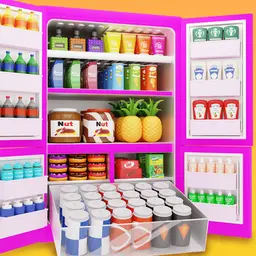
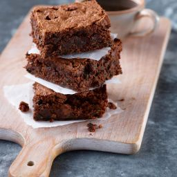

Fierce Fitness in Skopje is my favorite place
and my biggest hobby. It’s not just an ordinary
gym — it’s a modern,
energetic fitness club located right in the city
center. What I
love most about Fierce Fitness is the variety of
group workouts they offer, like kickboxing, Total
Body workouts, Upper Body, and Lower Body strength
classes. The atmosphere is always positive and
motivating, and the trainers are professional,
friendly, and supportive. It doesn’t matter if
you’re a beginner or already experienced — everyone
feels welcome. After every workout, I feel
stronger, more confident, and full of energy.
Besides fitness, one of my biggest hobbies is
organizing — whether it's planning fun nights out,
shopping trips, or even vacations. I love putting
together good-looking outfits for every occasion,
and I always enjoy making detailed plans for where
to go and what to do. For example, I recently organized
a trip to Crete with my friends in just two days, and
it turned out amazing! I enjoy going to places that are
loud, full of energy, and packed with people — that's where
I feel most alive. Planning and making things happen gives
me a real sense of excitement and satisfaction.

Fig.2 - A well organized fridge

Fig.3 -Two of my favorite moments side by side
Besides fitness, one of my biggest hobbies is
organizing — whether it's planning fun nights out,
shopping trips, or even vacations. I love putting
together good-looking outfits for every occasion,
and I always enjoy making detailed plans for where
to go and what to do. For example, I recently organized
a trip to Crete with my friends in just two days, and
it turned out amazing! I enjoy going to places that are
loud, full of energy, and packed with people — that's where
I feel most alive. Planning and making things happen gives
me a real sense of excitement and satisfaction.
All these hobbies make me feel energized, creative, and always excited for what’s next.
These small passions bring me joy, keep me motivated, and help me enjoy life to the fullest.